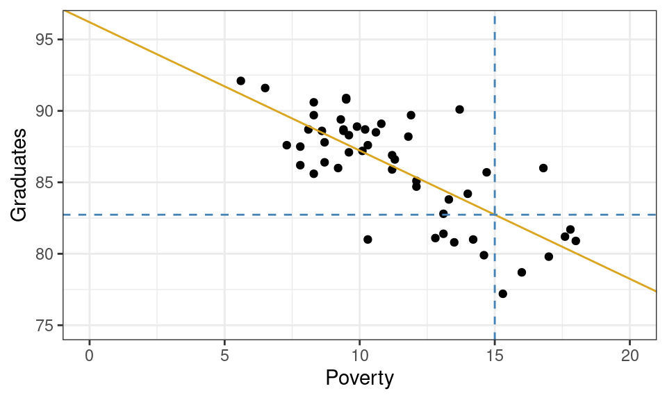
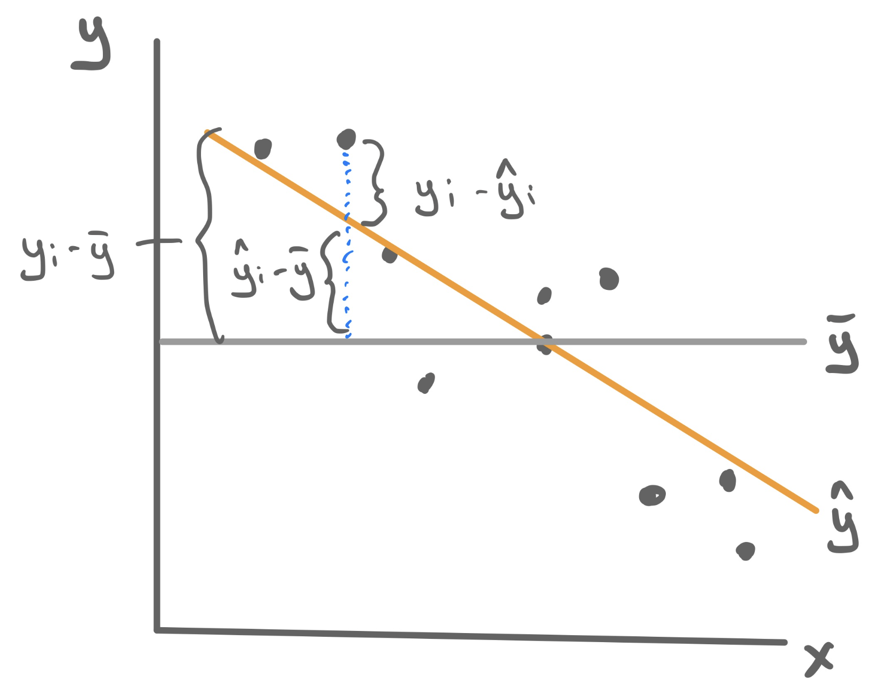
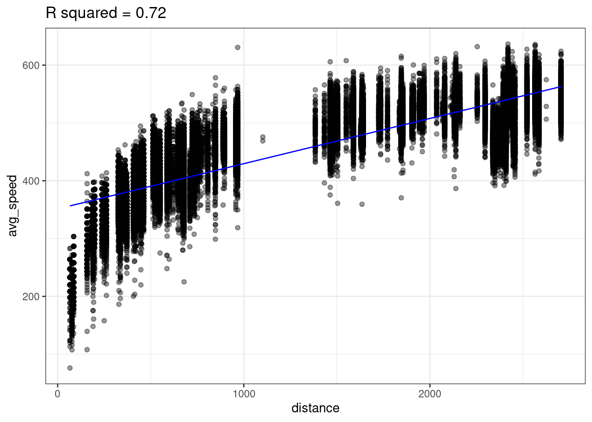
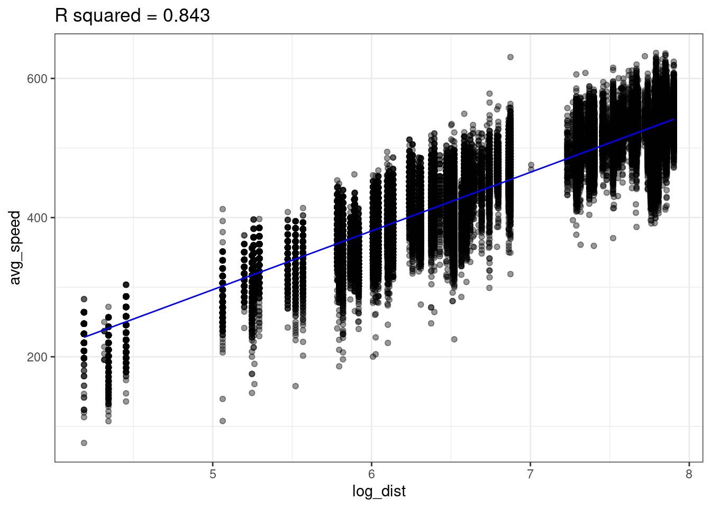
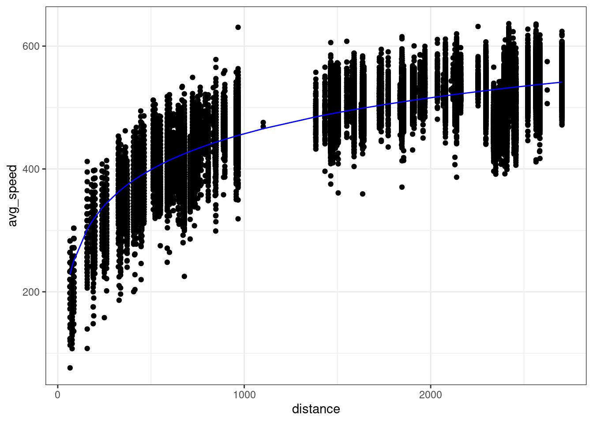
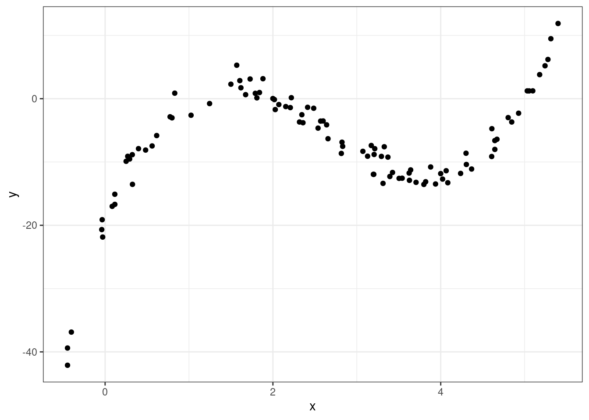

Evaluating and Improving Predictions
\(R^2\), Adding Predictors, Transformations, and Polynomials
In the last lecture we built our first prediction machine: a line drawn through a scatter plot that that minimizes the sum of squared residuals. In these lecture notes we focus on two questions: How can we evaluate the quality of our predictions? and How can we improve them?
Evaluating the fit to your data
Once you have fit a linear model to a scatter plot, you are able to answer questions such as:
What graduation rate would you expect for a state with a poverty rate of 15%?
Graphically, this can be done by drawing a vertical line from where the poverty rate is 15% and finding where that line intersects your linear model. If you trace from that intersection point horizontally to the y-axis, you’ll find the predicted graduation rate.
From the plot above, we can tell that the model yields a prediction around roughly 82.5%. To be more precise, we could plug the x-value into our equation for the line and solve.
\[ \hat{y} = 96.2 + -0.89 \cdot 15 = 82.85 \]
So how good of a prediction is 82.85%? Until we observe a state with a poverty rate of 15%, we’ll never know! What we can know, however, is how well our model explains the structure found in the data that we have observed. For those observations, we have both the predicted (or fitted) values \(\hat{y}_i\) as well as their actual y-values \(y_i\). These can be used to calculate a statistic that measures the explanatory power of our model.
Measuring explanatory power: \(R^2\)
\(R^2\) is a statistic that captures how good the predictions from your linear model are (\(\hat{y}\)) by comparing them another even simpler model: \(\bar{y}\). To understand how this statistic is constructed please watch this short video found in the Media Gallery on bCourses (14 minutes).
- R-squared (\(R^2\))
-
A statistic that measures the proportion of the total variability in the y-variable (total sum of squares, TSS) that is explained away using our model involving x (sum of squares due to regression, SSR).
\[R^2 = \frac{SSR}{TSS} = \frac{\sum_{i=1}^n (\hat{y}_i - \bar{y})^2}{\sum_{i=1}^n (y_i - \bar{y})^2}\]
Because the total variablity is composed of the explained and the unexplain variability, \(R^2\) can be equivalent formulated as 1 minus the proportion of total variability that is unexplained by the model, which uses the more familiar residual sum of squares (RSS).
\[R^2 = 1 - \frac{RSS}{TSS} = 1 - \frac{\sum_{i=1}^n (y_i - \hat{y}_i)^2}{\sum_{i=1}^n (y_i - \bar{y})^2}\]
\(R^2\) has the following properties:
- Always takes values between 0 and 1.
- \(R^2\) near 1 means predictions were more accurate.
- \(R^2\) near 0 means predictions were less accurate.

Example: Poverty and Graduation
To fit the least squares linear regression model to predict graduation rate using the poverty rate, we turn to the familiar lm() function.
m1 <- lm(Graduates ~ Poverty, data = poverty)For this particular model, \(R^2 = .56\). This means that poverty rate is able to explain about 56% of the variability found in graduation rates. That’s a good start!
Improving predictions
\(R^2\) allows us to quantify how well the model explains the structure found in the data set. From a model-building standpoint, it gives us a goal: to find a model with the highest possible \(R^2\). Here we outline three different methods for pursuing this goal - adding predictors, transformations, and polynomials - and we’d look at a different data set for each one.
Adding Predictors
Let’s return to the data set that that we studying when we first learned about multiple linear regression: ratings of Italian restaurants from the ZAGAT guide. For each of the 168 restaurants in the data set, we have observations on the average price of a meal, the food quality, the quality of the decor, the quality of the service, and whether it is east or west of Fifth Avenue.
# A tibble: 168 × 6
restaurant price food decor service geo
<chr> <dbl> <dbl> <dbl> <dbl> <chr>
1 Daniella Ristorante 43 22 18 20 west
2 Tello's Ristorante 32 20 19 19 west
3 Biricchino 34 21 13 18 west
4 Bottino 41 20 20 17 west
5 Da Umberto 54 24 19 21 west
6 Le Madri 52 22 22 21 west
7 Le Zie 34 22 16 21 west
8 Pasticcio 34 20 18 21 east
9 Belluno 39 22 19 22 east
10 Cinque Terre 44 21 17 19 east
# ℹ 158 more rowsMaybe we want a model that will tell us how much we will have to spend at a new restaurant that is not upfront about its pricing; or maybe we just opened a new restaurant and want to know how much customers expect to spend. So price will serve as our response variable, leaving us four possible predictor variables. Let’s fit four different regression models, each one incorporating more more information by adding a predictor.
Unfortunately we can’t visualize these four linear models as four lines on a scatterplot because only the first model describes a line. The second describes two parallel lines; the third describes two parallel planes in 3D; the fourth describes two parallel hyperplanes in 4D (🤯).
We can, however, compare these four models in an arena where they’re all on the same playing field: how well they predict price. To quantify that, we can calculate the \(R^2\) value for each.
model R_squared
1 m1 0.3931835
2 m2 0.3987720
3 m3 0.6278808
4 m4 0.6278809Observe that the more information we provide the model - by adding predictors - the greater the \(R^2\) becomes! This is not a particular characteristic of the ZAGAT data set but of \(R^2\) in general. Adding new predictors will never lower the \(R^2\) of a model fit using least squares.
Non-linear transformation
The world is not always linear. We can create non-linear prediction models by building off the above linear model machinery. To demonstrate how to use this approach to increase the predictive power of our model, we’ll turn to a non-linear trend that should look familiar…
A single non-linear term
Take a question from flights lab as an example where we plot the average airspeed vs. flight distance. First let’s try fitting a linear model.

A linear model does not seem appropriate to model average speed from distance. There does appear to be a monotonically increasing trend, but it starts out steeper then flattens out1. This trend is reminiscent of functions like log or square root.
Lets try transforming our predictor (distance) with the log function to create a new variable called log_dist.
flights <- flights |>
mutate(log_dist = log(distance))We can then fit a linear model using this new log_dist variable as the predictor.
lm_speed_from_log_dist <-
lm(formula = avg_speed ~ log_dist, data=flights)Looking at the data below, we see there does seem to be a linear relationship between avg_speed and our new variable log_dist! Notice the x-axis in the below plot is log_dist whereas it was distance in the above plot.

The linear model with log_dist (\(R^2=0.843\)) predicts avg_speed better than the linear model with distance (\(R^2=0.72\))
We can now think of our predictive model as
\[ \widehat{y} = b_0 + b_1 \cdot \log(x) \]
In other words, our model is non-linear since \(x\) appears inside of a logarithm. We can plot the non-linear prediction function in the original predictor distance and we see the prediction function is curved!

So is this a linear model or a non-linear model? It’s both. We created a new variable log_dist by transforming the original variable; the prediction function is a linear function of this new variable. But we can also think of this as a function of the original variable distance; the prediction function is a non-linear function of this original variable.
Polynomials
Sometimes we need an more complex transformation than just a simple function (e.g. \(\sqrt{x}, \log(x), x^2,...\)). Take the following example where there is a strong association between x and y, but it’s not linear (this data, admitted, was simulated in R).

So how should we model this? Polynomials to the rescue!
A polynomial is a function like
\[ f(x) = -20 + 34 x - 16 x^2 + 2 x^3 \]
More generally a polynomial is a function like
\[ f(x) = c_0 + c_1 \cdot x + c_2 \cdot x^2 + \dots + c_d \cdot x^d \]
where the \(d+1\) coefficients \(c_0, c_1, \dots, c_d\) are constants The number \(d\) is called the degree of the polynomial – this is the largest exponent that appears.
Polynomials are flexible functions that can be quite useful for modeling. We can fit a polynomial model by adding new transformed variables to the data frame then fitting a linear model with these new transformed variables. This is just like how we fit a logarithmic function before by adding a new log transformed variable to the data frame then fit a linear model.
The prediction function here is a polynomial given by
\[ \widehat{y} = -20.086 + 34.669 \cdot x -16.352 \cdot x^2 + 2.042 \cdot x^3 \]
The Ideas in Code
Inspect model output with the broom library
Consider the code we ran earlier to fit a linear model which can predict graduation rate using the poverty rate.
m1 <- lm(Graduates ~ Poverty, data = poverty)When you run this code, you’ll see a new object appear in your environment: m1. This new object, though, is not a vector or a data frame. It’s a much richer object called a list that stores all sorts of information about your linear model. You can click through the different part of m1 in your environment pane, or your can use functions from the broom package to extract the important components using code.
# A tibble: 1 × 12
r.squared adj.r.squared sigma statistic p.value df logLik AIC BIC
<dbl> <dbl> <dbl> <dbl> <dbl> <dbl> <dbl> <dbl> <dbl>
1 0.558 0.549 2.50 61.8 3.11e-10 1 -118. 242. 248.
# ℹ 3 more variables: deviance <dbl>, df.residual <int>, nobs <int>The glance() function returns a series of different metrics used to evaluate the quality of your model. First among those is r-squared. Because the output of glance() is just another data frame, we can extract just the r-squared column using select().
glance(m1) |>
select(r.squared)# A tibble: 1 × 1
r.squared
<dbl>
1 0.558Here’s the \(R^2\) we got earlier!
Fitting polynomials in R with poly()
In R, we can fit polynomials using the poly() function. Here is the code that was used to fit the polynomial earlier in the notes.
You do not need to worry about the meaning behind the raw = TRUE argument. The simulated data frame mentioned earlier is called df, and has two variables in it: predictor and response.
Call:
lm(formula = response ~ poly(x = predictor, degree = 3, raw = TRUE),
data = df)
Coefficients:
(Intercept)
-20.086
poly(x = predictor, degree = 3, raw = TRUE)1
34.669
poly(x = predictor, degree = 3, raw = TRUE)2
-16.352
poly(x = predictor, degree = 3, raw = TRUE)3
2.042 Making predictions on a new observation with predict()
We have spending a lot of time talking about how to fit a model meant for predicting, but have not actually done any predicting! The predict() function can help us do this. It takes in two main arguments:
-
object: This is the linear model object which contains the coefficients \(b_0\), …, \(b_p\). In the graduate and poverty example, this object wasm1. We hadm1throughm4in the ZAGAT example. -
newdata: This is a data frame containing the new observation(s). This data frame must at least contain each of the predictor variables used in the column, with a value of these variables for each observation.
Example: ZAGAT food rating
Here, we will use m2 from the ZAGAT example. This model used \(food\) and \(geo\) in an attempt to predict price at a restaurant.
First, let’s make a new data frame with a couple of new, made-up observations.
restaurants <- data.frame(
food = c(25, 17),
geo = c("east", "west"))One of these restaurants is located in east Manhattan and has a food score of 25/30, while the other one is in west Manhattan and has a food score of 17/30.
Now, we can use this data frame alongside our m2 model object to make predictions for the prices.
predict(object = m2, newdata = restaurants) 1 2
55.89738 31.44043 We are predicted to have to pay roughly \(\$56\) at the first restaurant and roughly \(\$31\) at the second.
Summary
In this lecture we learned how to evaluate and improve out predictions. While there are many metrics to measure the explanatory power of a model, one of the most commonly used is \(R^2\), the proportion of the variability of the \(y\) that is explained by the model.
To improve our predictions - and increase the \(R^2\) - we saw three different strategies. If you have additional predictors in your data frame, its easy as pie to add them to your regression model and you are guaranteed to increase your \(R^2\).
A second strategy is capture non-linear structure by creating new variables that are simple transformations of the existing variable. The third approach, also targeting non-linear structure, is to replace a single predictor with a polynomial.
Footnotes
We call this concave or sometimes diminishing marginal returns.↩︎